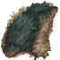
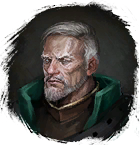

Шкура буркана
Предметы / С врагов
Открыть в интерактивной вики →
| Цена | 300 |
|---|---|
| Вес | 5 |
Описание
Вы можете продать ее
Вес: 5

Гроздан в Штабе Оставшихся.Вес: 5
| Можно продать у Гроздана в Логове Оставшихся. |
Дроп

Применение
|
Как добыть
Получаем за победу над:
|